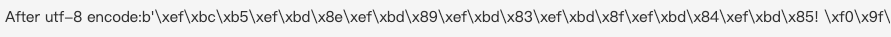
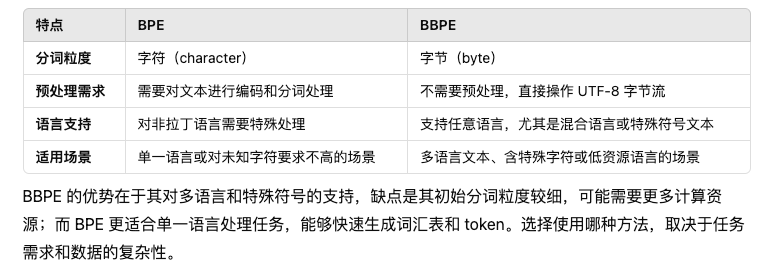
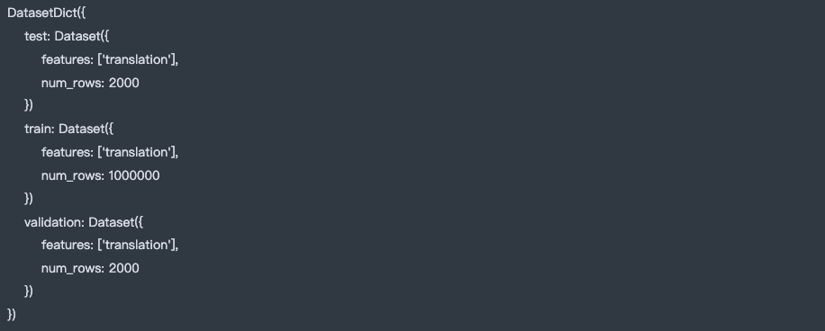
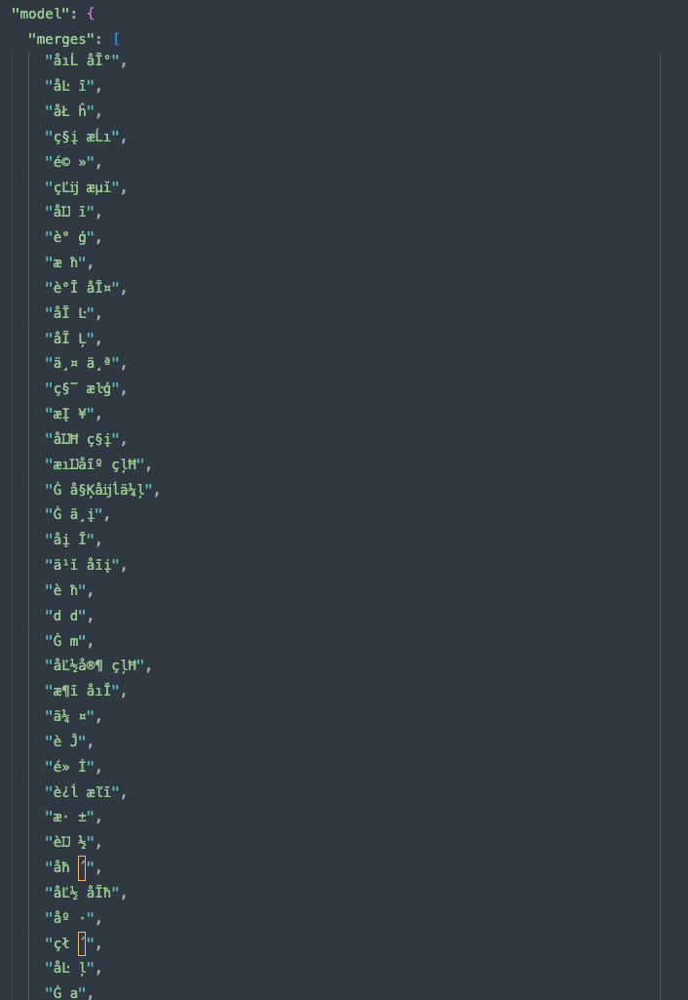

Tokenizer 实践
1. BBPE tokenizer
- tokenizer常见的训练算法是bpe,而目前各个企业都在使用BBPE
- BBPE(Byte-level Byte-Pair Encoding)是以字节为最小单位,而BPE最早则是以一个字符为最小单元
{'l o w </w>': 5, 'l o w e r </w>': 2, 'n e w e s t </w>': 6, 'w i d e s t </w>': 3}
{'l o w </w>': 5, 'l o w e r </w>': 2, 'n e w es t </w>': 6, 'w i d es t </w>': 3}
{'l o w </w>': 5, 'l o w e r </w>': 2, 'n e w est </w>': 6, 'w i d est </w>': 3}
- 这是BPE的训练流程
- 可以看出它是以一个字母为最小单位处理
- 由于e s t频次最多 -> est 最终合并成为一个token
- 而BBPE无需显式编码，直接操作字节流
- 将每个字符处理成字节流开始训练
- 比如这里是将text文本使用utf-8来编码成字节流
text = "Ｕｎｉｃｏｄｅ! 🅤🅝🅘🅒🅞🅓🅔‽ 🇺🇳🇮🇨🇴🇩🇪! 😄 The very name strikes fear and awe into the hearts of programmers worldwide. We all know we ought to “support Unicode” in our software (whatever that means—like using wchar_t for all the strings, right?). But Unicode can be abstruse, and diving into the thousand-page Unicode Standard plus its dozens of supplementary annexes, reports, and notes can be more than a little intimidating. I don’t blame programmers for still finding the whole thing mysterious, even 30 years after Unicode’s inception."
tokens = text.encode("utf-8")
print(f"After utf-8 encode:{tokens}")

- BPE vs BBPE
- 最小单位
- 标准 BPE 使用 字符（character） 作为最小分词单位。每个输入文本被分解成字符（对于中文是单字，对于英文是字母）。
- BBPE 使用 字节（byte） 作为最小单位，而不是字符。每个文本先被编码为 UTF-8 字节流，然后以字节为单位进行 BPE 操作。
- BPE局限性
- 对于 Unicode 文本（如中文、阿拉伯语等非拉丁字符语言），需要提前处理。
- 多字节字符（如中文）在初始阶段会直接作为一个单位，不会进一步分割。
- BBPE优势
- 支持任意语言，无需预处理（例如无需额外的分词工具）。
- 对于未知字符或特殊符号，不会因为缺乏编码规则而失败。
- 支持混合语言文本（如中英文混合、带有表情符号的文本）。
- 最小单位
1.1 BPE与BBPE算法总结

2. BBPE 源码解析
- 首先需要基于huggingface的tokenizers>库构建一个训练tokenizer的函数
def train_bbpe_tokenizer(input_ds, lang, vocab_size=52000, save_path="bbpe_tokenizer_{0}"):
"""
使用 Byte-Level BPE 训练一个支持中英文的分词器。
Args:
input_ds: 数据集，包含文本句子的迭代器。
lang: 数据集语言。
vocab_size: 词汇表大小。
save_path: 分词器保存路径。
"""
# Step 1: Initialize the tokenizer
tokenizer = Tokenizer(models.BPE())
# Step 2: Customize pre-tokenization and decoding (Optional)
# 归一化（NFKC 标准化，处理全角/半角字符等问题）
tokenizer.normalizer = NFKC()
# 字节级别的分词器
tokenizer.pre_tokenizer = pre_tokenizers.ByteLevel(add_prefix_space=False)
# 字节级别的解码器
tokenizer.decoder = decoders.ByteLevel()
# Step 3: Train the tokenizer using the trainer
trainer = trainers.BpeTrainer(
vocab_size=vocab_size,
# special_tokens=["<pad>", "<unk>", "<s>", "</s>", "<mask>"], # 特殊 token
special_tokens=["<|endoftext|>","<|padding|>"]
)
# 从数据集迭代器中训练分词器
tokenizer.train_from_iterator(
get_all_sentences(input_ds, lang), trainer=trainer
)
# Step 4: Save the tokenizer
save_path = Path(save_path.format(lang))
tokenizer.save(f"{save_path}.json", pretty=True)
print(f"Tokenizer saved to {save_path}.json")
return tokenizer
- 构建一个辅助函数,用来提取数据集进行迭代式的训练
def get_all_sentences(ds:Dataset,lang:str):
for item in ds:
yield item['translation'][lang]
3. 加载数据集
- 数据集我们使用
huggingface的datasets
from datasets import Dataset,load_dataset
from train_tokenizer import Config,get_all_sentences,get_or_train_tokenizer
config = Config()
config.datasource = 'Helsinki-NLP/opus-100'
config.lang_src = 'en'
config.lang_tgt = 'zh'
ds_raw = load_dataset(f"{config.datasource}", f"{config.lang_src}-{config.lang_tgt}",)
- 此外这里单独构建了一个
Config类用来配置训练参数
@dataclass
class Config:
datasource : str = 'opus_books'
lang_src : str = 'en'
lang_tgt : str = 'it'
tokenizer_file: str = 'tokenizer_{0}.json'
unk_token: str = "[UNK]"
special_tokens: list = ("[UNK]", "[PAD]", "[SOS]", "[EOS]")
min_frequency: int = 2
# Optional
@dataclass
class BPEConfig:
datasource : str = 'opus_books'
lang_src : str = 'en'
lang_tgt : str = 'zh'
tokenizer_file: str = 'BPEtokenizer_{0}.json'
vocab_size: int = 30000 # 词汇表大小
min_frequency: int = 2 # 子词的最小频率
special_tokens: list = ("[UNK]", "[PAD]", "[SOS]", "[EOS]")
- 我们可以看一下加载的dataset’s info
ds_raw

4. Train a tokenizer based bbpe
- 直接使用
train_bbpe_tokenizer函数开始训练
from train_HFtokenizer import train_bbpe_tokenizer
tokenizer=train_bbpe_tokenizer(input_ds=ds_raw['train'],vocab_size=30000,lang=config.lang_tgt)
- 训练完成以后会输出
Tokenizer saved to bbpe_tokenizer_zh.json
- 我们从数据集中简单测试一下
text = get_all_sentences(ds_raw['train'],lang=config.lang_tgt)
text_iter= next(text)
text_iter
- Output:
'上帝在挑战你，他说你是笨蛋' - 我们在该文本进行编码
tokens_zh = tokenizer.encode(text_iter)
print(f"ids:{tokens_zh.ids}")
print(f"type_ids:{tokens_zh.type_ids}") # type_ids一般用于区分句子类型。例如，在BERT中，type_ids用于区分句子对中的两个句子，分别标记为0或1。在这个例子中，所有的type_ids都是0，表明这是一个单独的句子。
print(f"tokens:{tokens_zh.tokens}")
print(f"offsets:{tokens_zh.offsets}")
- Output
ids:[3684, 241, 1756, 273, 13, 3609, 2180, 11477]
type_ids:[0, 0, 0, 0, 0, 0, 0, 0]
tokens:['ä¸Ĭå¸Ŀ', 'åľ¨', 'æĮijæĪĺ', 'ä½ł', ',', 'ä»ĸ说', 'ä½łæĺ¯', '笨èĽĭ']
offsets:[(0, 2), (2, 3), (3, 5), (5, 6), (6, 7), (7, 9), (9, 11), (11, 13)]
- 可以发现能够正常将文本映射成ids
- 但是tokens确实乱码存储的,当我们查看训练完保存的的
vocab.json发现,很多内容也是乱码的

4.1 现象分析
- Token 显示为乱码：
- 分词器的
encode方法返回的 tokens 看起来是乱码（如á等）。 - 这是因为使用了
ByteLevel的分词器，它将输入文本按字节级别处理，每个字符被映射到字节形式。
- 分词器的
- Decode 后正常解码：
- 分词器的
decode方法能够正确地将 token IDs 转回原始文本。 - 这是因为 Byte-Level 分词器会在解码时，将这些字节形式映射回原始的 Unicode 字符。
- 分词器的
4.2 为什么会出现这种现象？
Byte-Level BPE 的核心原理是对字节序列（而不是字符）进行操作：
- 训练时： 输入文本会被分割成字节，而不是直接按字符分割。每个字节都会被映射到一个 token。
- 编码时： 输出的 token 是字节的编码结果，可能无法直接显示为人类可读的字符。
- 解码时： 分词器会将这些字节还原为原始文本。
5. 使用tokenizer直接decode
- 面对乱码的token,可以直接使用tokenizer去decode文本的ids
tokens_zh = tokenizer.decode(tokens_zh.ids)
tokens_zh
-
Output: ```‘上帝在挑战你,他说你是笨蛋’``
-
可以看出能够直接返回正常人类可理解的文本
-
但是我们想手动解码可以参考Karpathy‘s MinBPE源码
def decode(self, ids):
# given ids (list of integers), return Python string
part_bytes = []
for idx in ids:
if idx in self.vocab: # idx -> bytes
part_bytes.append(self.vocab[idx]) # 遍历ids中idx 在vocab找到对应的token utf-8表示
elif idx in self.inverse_special_tokens: # 如果是特殊token对应的idx 在倒置的special token 字典里查找
part_bytes.append(self.inverse_special_tokens[idx].encode("utf-8")) # 然后在utf-8编码转化为token
else:
raise ValueError(f"invalid token id: {idx}")
text_bytes = b"".join(part_bytes)
text = text_bytes.decode("utf-8", errors="replace") # 对text_bytes进行utf-8解码形成token
return text